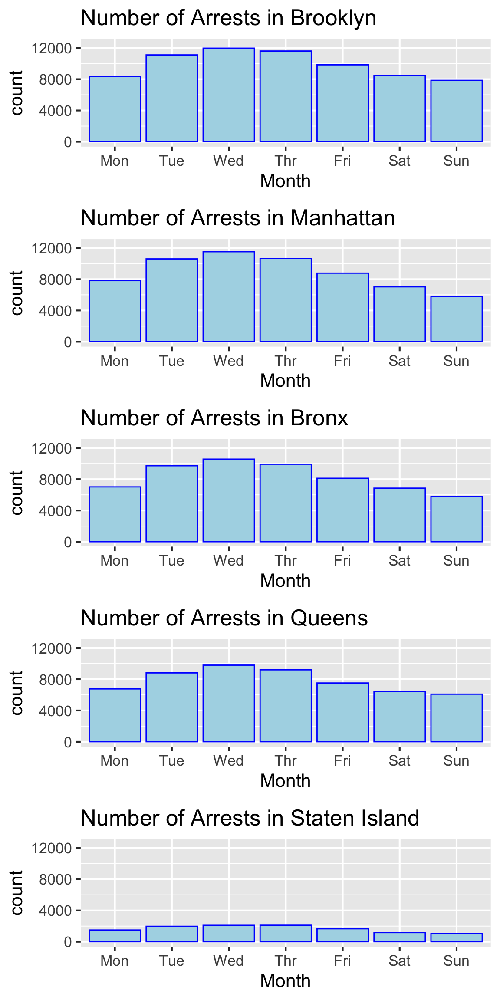
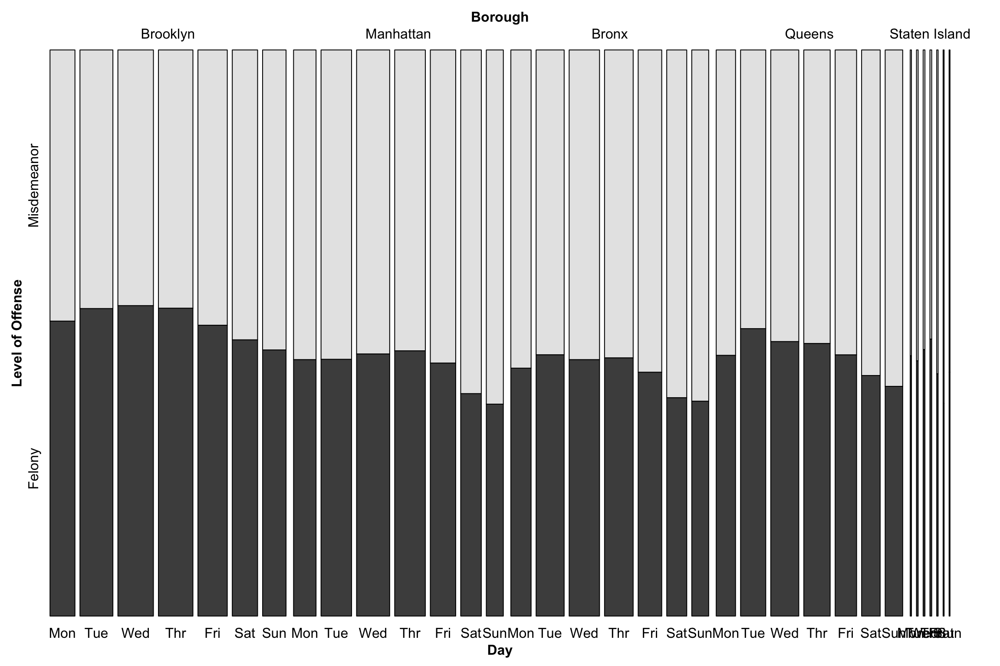

Chapter 5 Results
In this section, we will present our results by using various visualization techniques to evaluate the overall living condition across neighborhoods in New York City. We think the findings we discover will help people make a better decision to to maintain a safe and healthy life.
5.1 COVID-19 Dataset
We will draw two headmaps to visualize what are the vaccination rate in different ages, ethnicities in different boroughs and citywide.
From the above plot we can observe percentage of people fully vaccinated in different ages, ethnicities in different boroughs and citywide.
For different age groups, teenagers and adults have the highest vaccination rate since most of them are required to do so. While kids have lower rates than any other group because some vaccines are not suitable for kids.
For ethnicity, Asian people seem to be more willingly to be vaccinated. While others are basically the same.
For boroughs, Manhattan has the highest vaccination rate for most age groups and ethnicities. The reason behind this might be that Manhattan have more regulations for vaccinations and have higher population density. While in low population density area like Staten Island, people may not be so eager to get vaccinated.
From the above plot we can observe percentage of people vaccinated in different ages, ethnicities in different boroughs and citywide.
The results do not change a lot from the last one. Teenagers and adults still have the highest vaccination rate and Manhattan has the highest vaccination rate for most age groups and ethnicities.
One interesting fact is that the rate is much higher than rate for fully vaccinated people. An explanation may be that NYC only offer 100$ bonus for the first dose and many people do not think it is necessary to get a second dose.
5.2 Crime Dataset
5.2.1 Shooting Incident Data
We try to take a look at the trend of the shooting incidents across Brooklyn, Bronx, Manhattan, Queens, and Staten Island boroughs since 2020-01-01. The intuition is that we want to discover whether shooting incidents decrease during the COVID-19 pandemic due to the stay-at-home orders, travel restrictions and Business Closures. However, the truth is the gun violence epidemic has surged since the pandemic started. As we can see from the plot, the number of shooting incidents for all five boroughs in New York City all reached the peak value since the beginning of the COVID-19 pandemic. In July 2020, the number of shooting incidents occurred in Brooklyn in July 2020 is 165, which is 135% greater than the second largest number of shooting incidents occurred in Bronx. Even though the majority of people are forced to stay home, gun violence spikes during the summer of 2020. One possible explanation could be that the prolonged emotional and financial stress may lead to the indoor violence. According to Gun Violence Archive, there is a 25 percent increase in deaths related to gun homicides and non-suicide-related shootings from 2019. It seems like less shooting incidents happened during the winter holiday for five boroughs. Compared with Brooklyn and Bronx, Manhattan, Queens, and Staten Island have a relatively smaller number of gun violence incidents.

When looking at the location of where shooting incidents happened, we create a multidot Cleveland dot plot to display the 30 most frequent places and show the counts for Brooklyn, Bronx, Manhattan, Queens, and Staten Island boroughs for each of these 30 places. Surprisingly, for each borough, a great proportion of location descriptions about the shooting incidents are missing. For example, the police can not determine over 700 shooting incidents in Brooklyn and over 250 cases’ locations in Manhattan are unknown or missing. From the plot, we can also see that multi-dwell public houses and apartment buildings are the places where the shooting took place most often. Such findings can somewhat support the evidence that gun violence surged during the pandemic as we just discussed.
Next we will try to explore the time that shooting incidents took place most frequently. Therefore, we use a square heatmap to help us identify some interesting pattern based on the time of the shooting incidents. We first need to aggregate data by day and hour. For example, an incident occurred on 2020-04-08 16:35:00. Then, such data point has a x coordinate equal to 16 and a y coordinate equal to 8. After accumulating all shooting incidents, we can distinguish which hour in a day or which day in a month appears to be the most dangerous period of time to commute in the city.
The heat map reveals that fewer shooting incidents happened between 5:00 AM and 10:00 AM if compared with other time slots. Clearly, many shooting incidents took place around midnight. We also find a very dark square in the plot which is located at (03, 13), implying that there might be a surge in gun violence on a specific day.
Besides, we draw a mosaic pairs plot of all categorical (factor) variables related to victims’ demographics. For example, BORO variable could tell us the place victims visited. STATISTICAL_MURDER_FLAG variable could tell us whether the victim was dead. Other three variables give us more info about the victim’s demographics. Not surprisingly, Brooklyn and Bronx have more gun violence instances. Around 20% of victims are dead. Most of victims are 25-44 years old, African American, and male. Based on the plot, borough (variable BORO) and victim’s race (variable VIC_RACE) seem to have a strong association. Compared with other boroughs, a victim’s race is more likely to be African American and less likely to be White when the shooting incident happened in Brooklyn. Any pair of variables that consist of gender (variable VIC_SEX) has a weak association.
5.2.2 Arrest Data
How about the trend of arrests across five boroughs in New York city since 2020-01-01? We want to investigate whether the number of arrests have a similar pattern as the number of shooting incidents. It is worth noting that the overall number of arrests is way larger than the overall number of shooting incidents. Brooklyn and Manhattan are the two boroughs that have a very large number of arrests. Staten island has the least number of arrests throughout the year. Except for Staten island, we find other four boroughs have very similar distributions. In January, February and March, four boroughs have their top 3 greatest number of arrests in a year respectively. A small surge can be observed in May for four boroughs. Moreover, we can see a big gap between September and October and fewer arrests were recorded in winter holiday, which follows a same trend that we have observed in our shooting incident dataset.

We also plot a histogram to display the number of arrests in different years across Brooklyn, Manhattan, Bronx, Queens, and Staten Island boroughs. We try to find whether the policy that aimed at reducing the crowd during the COVID-19 pandemic had an impact on reducing number of arrests in New York city. As we can see, there exist two sharp decreases. One occurred after March 2020 and the other one occurred after May 2020. However, as business began to reopen and citizens in New York city became to get back normal starting in Spring 2021, the number of arrests was rising. Across five boroughs in New York city, the number of arrests in 2021 exceeded last year since the beginning of March 2021.

Another interesting finding is that arrests usually happen during the middle of the week. The number of arrests gradually increases until it reaches the maximum on Wednesday and then decreases. One possible explanation is that fewer police on the street during the weekends.
We also want to track types of arrests. By displaying the bar plot, we find the most common type of arrest is misdemeanor with 117856 counts. Felony has the second largest count which is 134219. The least common type of arrest is infraction with 351 counts. Since violations and in fractions appear to be less common in our dataset, we will only discover the association between type of arrest such as felony and misdemeanor and other variables like boroughs as well as days in a week. According to the NYPD, misdemeanors are considered to be crimes that are not as serious as felonies. As a result, we are more concerned with arrests that are related to felonies.

From the mosaic plot, we find there is an association between type of arrest and day in a week. Across five boroughs, number of arrests that are felonies is relatively smaller on Friday, Saturday and Sunday. Moreover, there is an association between type of arrest and location. Brooklyn and Queens have relatively a larger number of arrests that are felonies.
We also want to look at the most common offense type by creating a multidot Cleveland dot plot to display the 30 most frequent offense types and show the counts for Brooklyn, Manhattan, Bronx, Queens and Staten Island boroughs for each of these 30 offense types. We can see that for each offense type Brooklyn and Manhattan have largest counts among five boroughs while Staten island always has the smallest counts.
5.3 Air Quality Dataset
There are three different measures of air quality: Fine Particulate Matter (PM2.5), Nitrogen Dioxide (NO2) and Ozone (O3). In this part, we draw three boxplots and three lineplots to visualize how these three kinds of data distribute in different boroughs and how they change over the time.
First, we choose PM2.5 to draw the plot, which is the most common indicator for air quality.


From the plot we can observe that Manhattan and Bronx have the highest mean PM 2.5 value , while Staten Island has a better air quality. Manhattan’s PM 2.5 value also varies the most. Besides, Bronx has the most outliers which indicates that there are some places are heavily polluted. The reason behind this might be that Manhattan and Bronx have higher population and less land, which could result in more toxic waste in air.
From the lineplot we can also observe that PM 2.5 in air quality is periodical, which is usually lower in the begining of a year. We can also conclude that for all boroughs, the air quality is getting better and better from 2016 to 2018 as the values are descending.

In the second graph, we use a different measure NO2, and the results are basically the same with the last one depite that Bronx is the leading polluted borough in this measure.
From the lineplot we can also observe that NO2 in air quality is also periodical. One difference from the above one is that the NO2 is usually lower in the middle of a year and peaks in the end of the year. We can also conclude that for all boroughs, the air quality is getting better and better from 2016 to 2018 as the values are descending.
Ozone (O3) has become the most dangerous toxic air particles in recent years, which could do serious damage to human lungs. In the third graph, we visualize how O3 data distributed in different boroughs. The results are very different from the last two. Queens becomes the most polluted borough with most outliers. While Mahanttan and Bronx who have most NO2 and PM 2.5 have least O3 in air. We could not find a reason for this observation. However, what we can be sure is that we should use different measures to indicate how air is polluted since different particles may not have the same distributions in boroughs.
The lineplot does not show much information since there are not enough data. We can not be sure if O3 in air quality is also periodical. However, we can observe that for all boroughs, the air quality is first getting better and then getting worse from 2016 to 2018 when considering O3 values. And we should be more careful about O3.